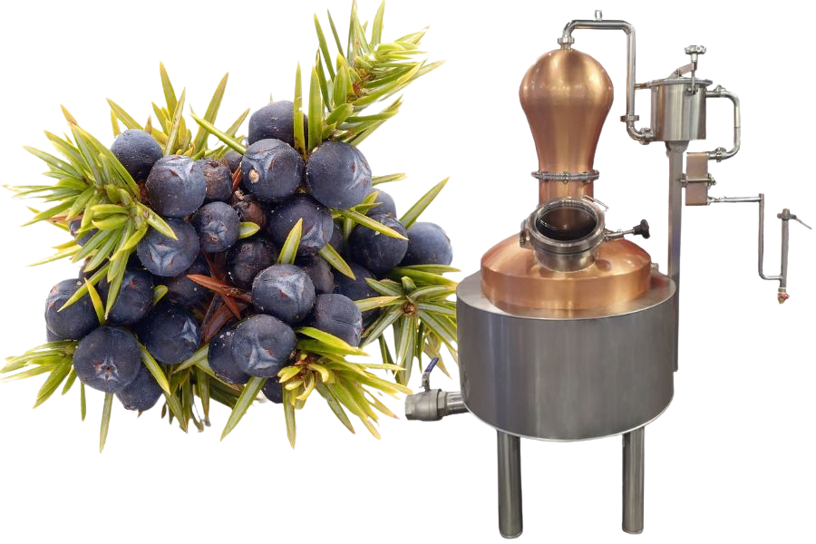
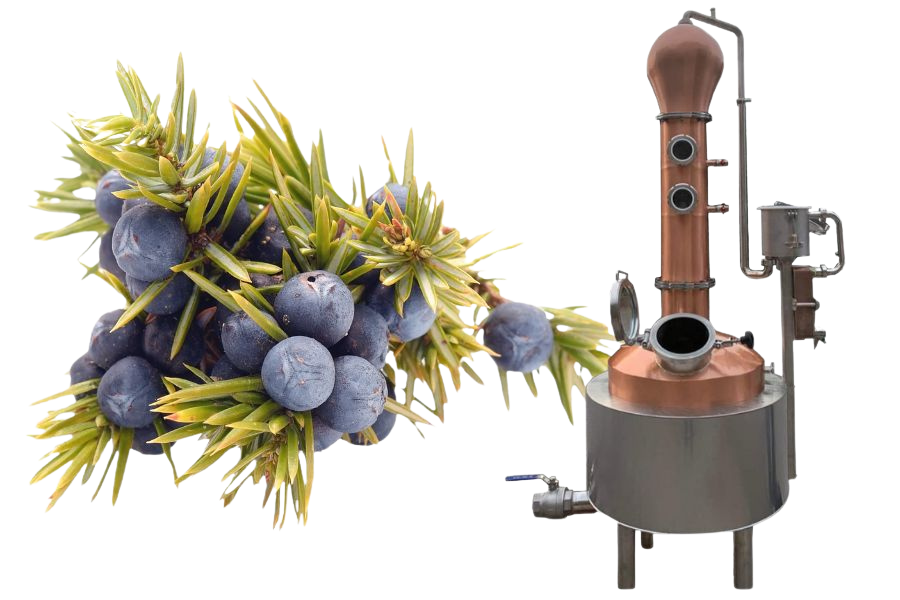
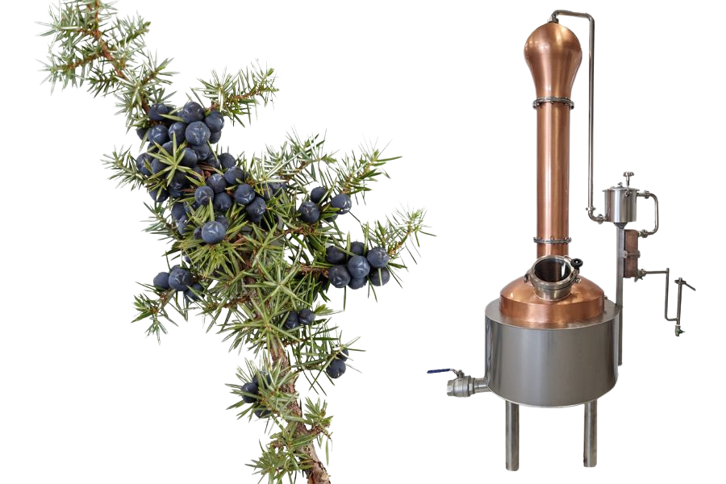
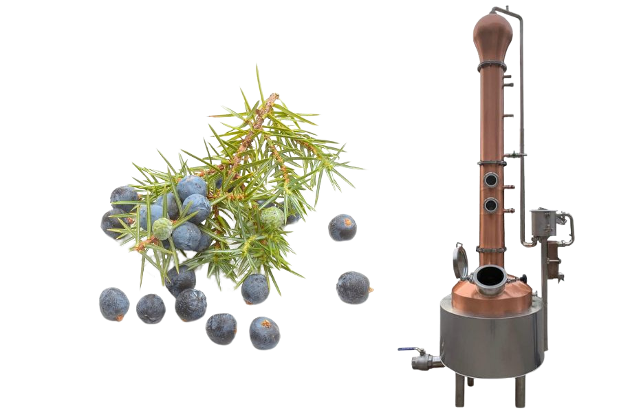

Продукція
BULL 1

- Котел: Об'єм 150 літрів з контролем температури.
- Конденсація: Пластинчастий теплообмінник з водяним охолодженням.
- Зовнішній кошик для джину: Знімний кошик з нержавіючої сталі AISI 304.
- Мідний купол: З контролем температури.
- Електричний щит: PLC для керування нагріванням, контролю температури та налаштування мішалки.
BULL 2

- Додатково: Мідна колона з двома тарілками, що дозволяє кращу ректифікацію алкоголю.
BULL 3

- Додатково: Мідний дефлегматор з водяним охолодженням для точного розділення ароматів.
BULL 4

- Додатково: Висока універсальність, підходить для виробництва широкого спектру дистилятів, таких як джин, фруктовий гейст, бренді, віскі тощо.
Переваги наших аламбіків
- Виготовлені з високоякісних матеріалів для тривалого використання.
- Легкі у використанні та очищенні.
- Забезпечують високу якість та чистоту кінцевого продукту.
- Made in Italy
Як користуватись
- Заповніть аламбік інгредієнтами для джину.
- Підключіть аламбік до джерела нагрівання.
- Запустіть процес дистиляції.
- Насолоджуйтесь вашим домашнім джином!
Контакти
Якщо у вас є питання або ви хочете зробити замовлення, зв'яжіться з нами:
Адреса: Via Crosetta, 8 – 33077 Sacile (PN), Італія
Телефон: +39 347 6191721
Email: podoland@gmail.com